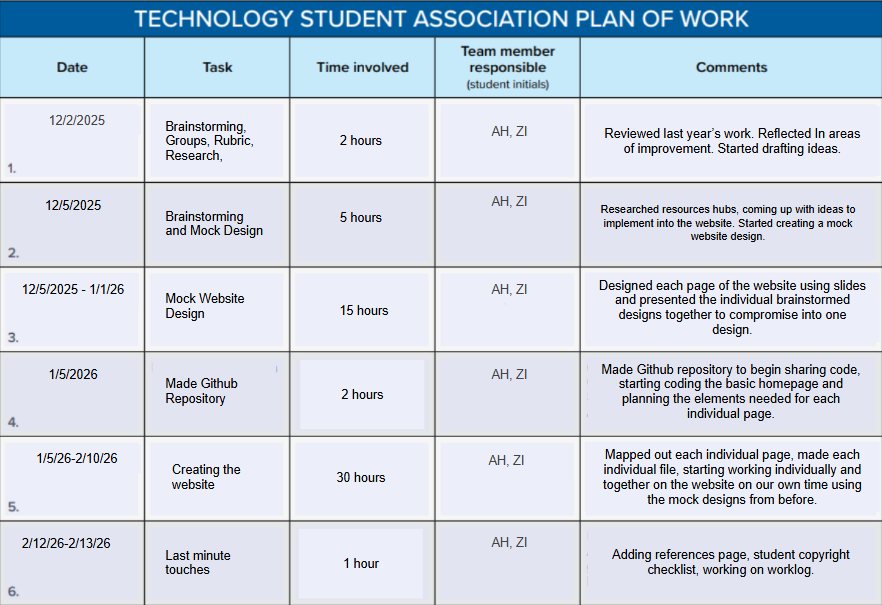

References
Student Copyright Checklist
Student Copyright Checklist ↗Opens in a new tab.
Work Log

Works Cited (MLA Format)
“Community Services.” Gwinnett County Government, gwinnettcounty.mhsoftware.com/View.html?calendar_id=16. Accessed 14 Feb. 2026.
“Scholarships.” Peach State Federal Credit Union, www.peachstatefcu.org/scholarships. Accessed 14 Feb. 2026.
“HOPE Scholarship.” GAfutures, www.gafutures.org/hope-state-aid-programs/. Accessed 14 Feb. 2026.